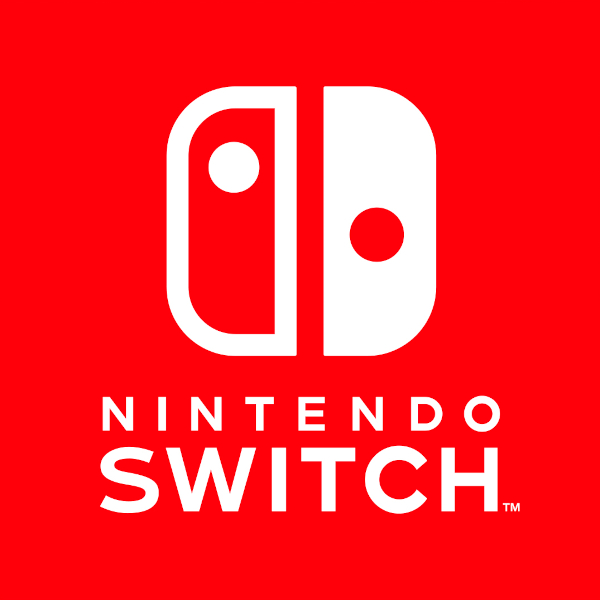

Gry wideo są źródłem rozrywki dla setek milionów ludzi na całym świecie. Moja praca przedstawia po 3 najlepiej sprzedające się gry na 11 konsol różnych producentów. Pozwoli to lepiej zrozumieć historię gier komputerowych. Niektóre z gier mogą okazać się niemałym zaskoczeniem, a chyba mało kto odgadnie gry w tym zestawieniu. Na tym właśnie koncentruje się ta lista. Pierwsza część przedstawia niektóre konsole Sony, druga od Microsoftu, a trzecia dotyczy urządzeń firmy Nintendo.
-
Sony
-
PlayStation 1
-
Gran Turismo

10,85 miliona kopii -
Final Fantasy VII

10,02 miliona kopii -
Gran Turismo 2

9,37 miliona kopii -
PlayStation 2
-
Grand Theft Auto: San Andreas

17,33 miliona kopii -
Gran Turismo 3: A-Spec

14,89 miliona kopii -
Gran Turismo 4

11,76 miliona kopii -
PlayStation 3
-
Grand Theft Auto V

29,52 miliona kopii -
Gran Turismo 5

11,95 miliona kopii -
The Last of Us
7 milionów kopii -
PlayStation 4
-
God of War

19,5 miliona kopii -
Uncharted 4: A Thief's End
 – przygodowa gra akcji przedstawiona z perspektywy trzeciej osoby, wyprodukowana przez studio Naughty Dog. Gra została wydana przez Sony Computer Entertainment 10 maja 2016 roku wyłącznie na konsolę PlayStation 4. Jest to czwarta część serii Uncharted.")
16 milionów kopii -
Marvel's Spider-Man

13,2 miliona kopii -
Microsoft
-
Xbox
-
Halo 2

8,46 miliona kopii -
Halo: Combat Evolved

5 milionów kopii -
Fable
3 miliony kopii -
Xbox 360

-
Kinect Adventures!

24 miliony kopii -
Grand Theft Auto V

22,95 miliona kopii -
Minecraft: Xbox 360 Edition

21 milionów kopii -
Xbox One

-
Forza Horizon 4

10 milionów kopii -
Grand Theft Auto V

8,72 miliona kopii -
PlayerUnknown's Battlegrounds
 - wieloosobowa gra komputerowa typu battle royale wyprodukowana i wydana przez koreańskie przedsiębiorstwo Krafton. Gra została wydana we wczesnym dostępie na PC w marcu 2017, premiera gry na Xbox One odbyła się 12 grudnia 2017")
8 milionów kopii -
Nintendo
-
GameCube
-
Super Smash Bros. Melee

7,41 miliona kopii -
Mario Kart: Double Dash

6,96 milionów kopii -
Super Mario Sunshine

6,28 milionów kopii -
Wii
-
Wii Sports
 oraz Wii Remote. Gra jest dodawana za darmo do konsoli Wii (z wyjątkiem Japonii). Gra zadebiutowała w grudniu 2006 r.")
82,9 miliona kopii -
Mario Kart Wii

37,38 miliona kopii -
Wii Sports Resort

33,14 miliona kopii -
Wii U

-
Mario Kart 8

8,45 milionów kopii -
Super Mario 3D World

5,87 milionów kopii -
New Super Mario Bros. U

5,81 milionów kopii -
Nintendo Switch
 -
Mario Kart 8 Deluxe

38,74 miliona kopii -
Animal Crossing: New Horizons

34,85 miliona kopii -
Super Smash Bros: Ultimate

25,71 milionów kopii